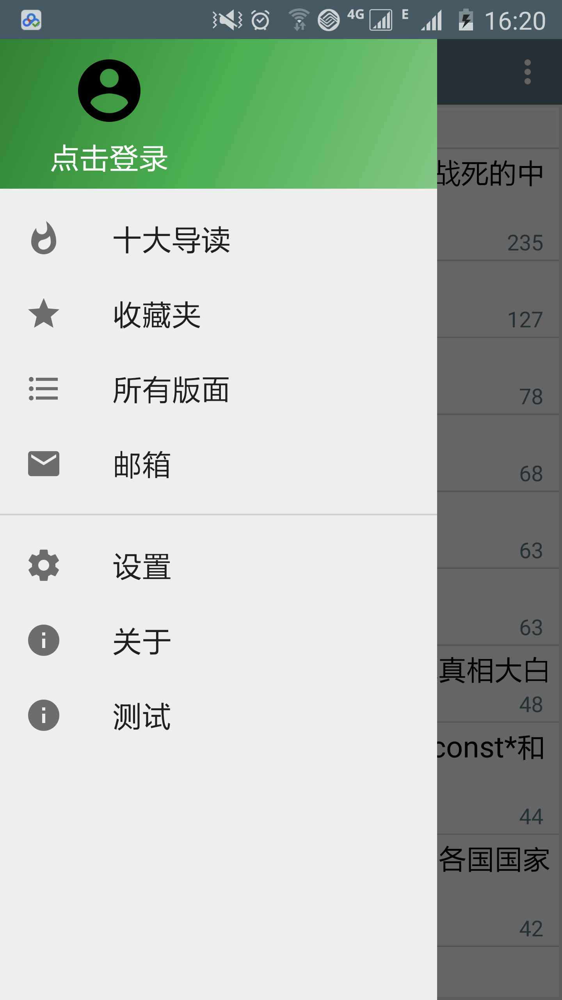

zSMTH 水木社区客户端Android版.
zSMTH-Android是一个开源的水木社区客户端，目标是实现跟zSMTH-IOS类似的功能。
本项目使用了当前Android开发流行的技术，比如
- RxJava+Retrofit2+okhttp3: 网络和reactive模式开发
- Jsoup: 解析页面内容
- Glide: 网络图片下载、缓存和显示
- PhotoView: 图片的缩放
同时欢迎跟多的人参与进来一起改进！
屏幕截图

zSMTH-Android是一个开源的水木社区客户端，目标是实现跟zSMTH-IOS类似的功能。
本项目使用了当前Android开发流行的技术，比如
同时欢迎跟多的人参与进来一起改进！